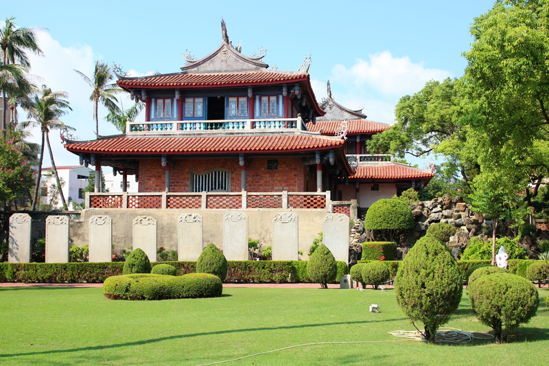

景點介紹

赤崁樓
赤崁樓是台南中西區內最主要的古蹟建築，1652年荷蘭人在此建立普羅民遮城，至此奠定了台南行政商業中心的位置，歷經300多年來幾經整修改建，始有現今的樣貌，內有海神廟、文昌閣及蓬壺書院，最吸引目光的莫過於移自大南門城邊的9塊御碑，由狀似石龜的贔屭所乘載，傳說贔屭為九龍生子之一，生性喜歡負重，也因為贔屭而讓赤崁樓增添不少傳說故事。
到了夜間，赤崁樓周邊點起黃色的燈光，讓古味十足的建築增添不少韻味，常在前方廣場舉辦音樂會，也讓赤崁樓不管是在白天或夜晚都擁有獨特的魅力。